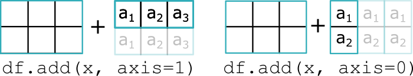
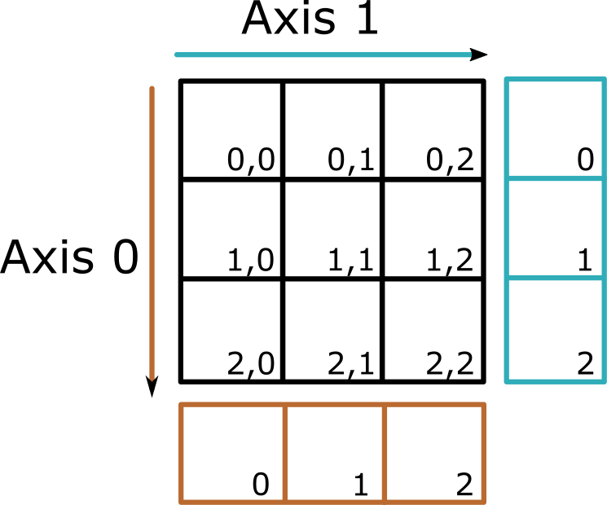

Pandas#
pandas es una librería que se utiliza principalmente para analizar, limpiar, explorar y manipular datos tabulares. Sus principales clases son DataFrame, Series e Index pero tiene una variedad de clases más.
Para utilizar pandas es necesario instalarlo. Desde la terminal usar:
# Con pip
pip install pandas
# Con conda
conda install pandas
Una vez instalado se debe de importar
# Importar pandas a la sesión
import pandas as pd
pdes el alias por convención.En el sitio se utilizará
pdpara hacer referencia apandas.
Para conocer la versión de pandas instalada usar:
# Verificar la versión de pandas
pd.__version__
En pandas existen tres objetos que son con los que se estará trabajando principalmente:
Index: Es un array inmutable que puede ser de cualquier tipo de dato, pero todos los elementos del mismo tipo, funje el papel de identificar por medio de etiquetas cada fila o columna. Puede ser visto como un
setordenado o un multi set ordenado, aunqueIndexpuede tener valores repetidos.Series: Es un
ndarrayunidimensional (un vector columna) que puede ser de cualquier tipo de dato, pero todos los elementos del mismo tipo. Además las filas tienen unIndexpara identificar a cada fila.DataFrame: Aunque se podría considerar a un
DataFramecomo unndarraybidimensional, como una matriz que tiene filas y columnas, en términos generales es unndarraymultidimensional, pero para efectos prácticos se considerará como una matriz. Las columnas pueden ser de diferentes tipos entre sí, pero los elementos de cada columna deben de ser todos del mismo tipo. Tanto las filas como las columna tiene etiquetas que identifican los elementos mediante objetosIndex.
Las tres clases anteriores funcionan de manera similar a como funcionan los arrays de numpy, por ejemplo, las operaciones entre estos objetos están vectorizadas y muchas funciones de numpy también se pueden usar con estas clases.
Tipos de datos#
La mayoría de Tipos de datos disponibles en numpy se pueden usar en pandas, estos a su vez extienden los tipos built-in de escalares disponibles en Python, los cuales se pueden resumir brevemente como:
Integer(int64): Números enteros.Float(float64): Números décimales.Object(object): Útil para almacenar cualquier tipo de dato, incluyendo cadenasstr.Datetime(datetime64): Fechas y tiempo.Boolean(bool): Valores lógicos (TrueyFalse).
pandas introduce además otros escalares y arrays algunos de los cuales se revisan con más detalle en Escalares y Arrays.
Tipo de Dato |
Escalar |
Array |
Alias en cadena |
|---|---|---|---|
Datetime |
|
||
Timedelta |
|
||
Period |
|
||
Interval |
|
||
Categorical |
(none) |
|
|
String |
|
|
|
Nullable Integer |
(none) |
|
|
Nullable Float |
(none) |
|
|
Nullable Boolean |
|
|
|
Sparse |
(none) |
|
Note
Para más información visitar la documentación de pandas.
Valores pérdidos en pandas#
En las principales clases de pandas existen restricciones con respecto a los tipos de datos de los elementos, por ejemplo, en Series e Index todos los elementos deben de ser del mismo tipo, mientras que en DataFrame todos los elementos de cada columna deben de ser del mismo tipo. Tomando en cuenta lo anterior para que los objetos de pandas puedan tener valores pérdidos, es necesario realizar algunas conversiones en los tipos de datos. Los principales valores considerados como valores perdidos son:
None: Es un objeto built-in de Python que representa un valor pérdido.NaN: Es un valorfloatque representa un valor numérico pérdido.
Por lo tanto para que los objetos de pandas puedan contener valores perdidos, respetando las restricciones de tipos de datos, es necesario que éstos se conviertan a tipo object o float, siguiendo la siguientes reglas:
Los objetos de tipo
objectpueden contenerNoneonp.nan.En los objetos de tipo
floatse convierten losNoneanp.nan.Los objetos de tipo
intse covierten afloaten caso de que haya valoresnp.nanoNone.Los objetos de tipo
boolse convierten aobjecten caso de que haya valoresnp.nanoNone.
Note
En pandas existen arrays que permiten valores perdidos como nullable integer, nullable float, nullable boolean, así como otros de tipo fecha y tiempo como datetimes y timedeltas, estos valores pérdidos se representarán por los objetos pd.NA y pd.NaT.
Operaciones entre objetos#
Al realizar operaciones con las clases de pandas tener en cuenta las siguientes características.
Operaciones unitarias#
Si la operación es unitaria, es decir, que utiliza un solo objeto, como elevar al cuadrado, entonces el objeto resultante tendrá el mismo Index que el objeto original:
# Importar librería
import pandas as pd
# Crear Series
s = pd.Series(data=[i**2 for i in range(1, 6)],
index = ['uno', 'dos', 'tres', 'cuatro', 'cinco'],
name="cuadrados")
# Imprimir el objeto
print(s**2)
uno 1
dos 16
tres 81
cuatro 256
cinco 625
Name: cuadrados, dtype: int64
Operaciones binarias#
Si la operación es binaria, es decir, utiliza dos objetos, entonces el objeto resultante tendrá como Index la unión de los índices de ambos objetos, pero únicamente tendrán valores la intersección de ambos objetos, mientras que el resto tendrán NaN. En caso de que los objetos sean ambos DataFrame la unión de índices se hace tanto para las filas como para las columnas.
# Crear otro Series
o = pd.Series(data = [1, 3, 5, 7, 9],
index = ['uno', 'tres', 'cinco', 'siete', 'nueve'],
name = "impares")
# Imprimir el objeto
print(s+o)
cinco 30.0
cuatro NaN
dos NaN
nueve NaN
siete NaN
tres 12.0
uno 2.0
dtype: float64
Importante: Notar que el índice se ordena de manera ascendente. Lo mismo ocurriría con las columnas en
DataFrames.
Tip
En caso de que la operación se realice con una función o método, es posible que se pueda utilizar el parámetro fill para indicar algún valor para rellenar los valores NaN.
Operaciones entre Series y DataFrame#
Si la operación es entre un DataFrame y un Series, la operación se hará entre los elementos con el mismo índice explícito, y se realizará broadcasting del Series de acuerdo a lo siguiente:
Nivel columnas: Si se quiere que sea a nivel de columnas, es decir, los elementos del
Seriesa lo largo de las columnas delDataFrame, se debe de usar el argumentoaxis=1(default).El
Seriesse convertirá en un vector fila y se “duplicará” a lo largo de las filas delDataFrame, para posteriormente hacer la operación element wise.El
IndexdelSeriesse alineará con elIndexde las columnas delDataFrame.
Nivel filas: Si se quiere que sea a nivel de filas, es decir, los elementos del
Seriesa lo largo de las filas delDataFrame, se debe de usar el argumentoaxis=0.El
Seriesse convertirá en un vector columna y se “duplicará” a lo largo de las columnas delDataFrame, para posteriormente hacer la operación element wise.El
IndexdelSeriesse alineará con elIndexde las filas delDataFrame. .
{kind=link}

Fig. 4 Operaciones binarias entre Series y DataFrame.#
Attention
Recordar que la operación únicamente se realizará entre los índices coincidentes.
Ejemplo:
En este ejemplo se puede observar una operación a nivel columnas (en el eje 1, comportamiento por default), el índice del Series se alinea con las columnas del DataFrame, de tal forma que a toda la columna a del df se le suma 2 y a toda las columna b se le suma 4. Además se puede observar que los índices que no están en los dos objetos (en este caso c) también aparecen en el resultado pero con NaN.
# Importar libreria
import pandas as pd
# Definir series
x = pd.Series([2, 4, 5], index=['a', 'b', 'c'])
# Definir df
df = pd.DataFrame({'a': [1, 2, 3], 'b': [4, 5, 6]})
# Realizar operación a nivel de columnas
print(df.add(x))
a b c
0 3 8 NaN
1 4 9 NaN
2 5 10 NaN
Parámetro axis#
En las funciones y/o métodos que tienen el parámetro axis significa que la función/método se puede aplicar únicamente en un eje determinado, dando como resultado un objeto de una dimensión menor con respecto al número de dimensiones del objeto original. Tomar como referencia la imagen para conceptualizar cómo se aplica la función dependiendo del eje indicado en un DataFrame.
{kind=link}

Independientemente del eje indicado el objeto retornado en la mayoría de los casos será un Series o un escalar.
axis=0o'index': En este caso se aplica la función a cada colummna a lo largo del índice.axis=1o'columns': En este caso se aplica la función a cada fila a lo largo de las columnas.